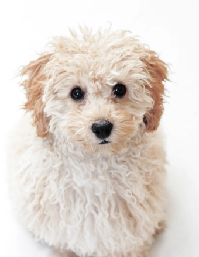
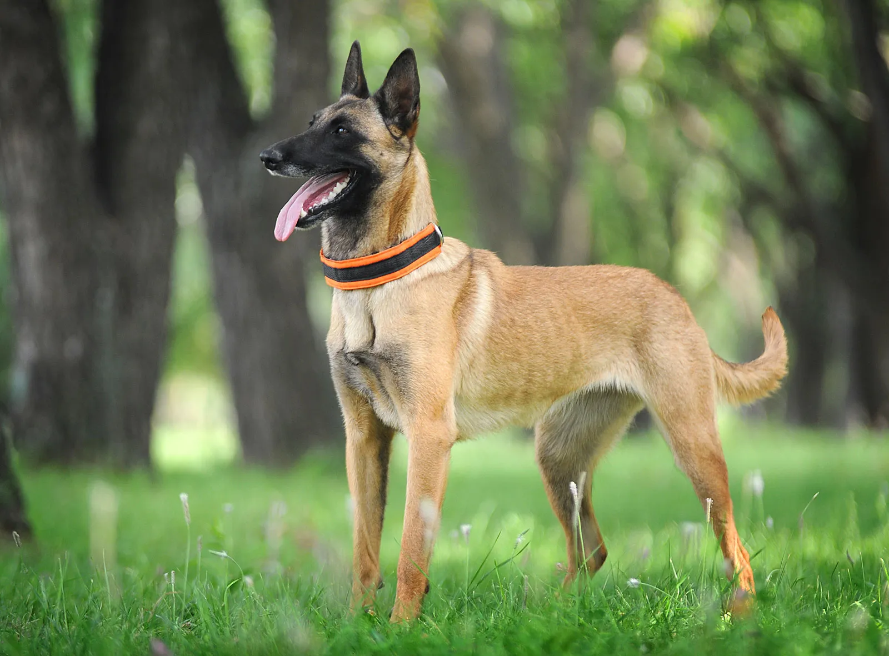

Poodle
The Poodle, called the Pudel in German and the Caniche in French, is a breed of water dog. The breed is divided into four varieties based on size, the Standard Poodle, Medium Poodle, Miniature Poodle and Toy Poodle, although the Medium Poodle is not universally recognised. Wikipedia
Temperament: Intelligent, Alert, Active, Instinctual, Trainable, Faithful
Origin: Germany, France
Height: Toy Poodle: 24 – 28 cm, Miniature Poodle: 28 – 35 cm, Standard Poodle: 45 – 60 cm, Medium Poodle: 35 – 45 cm
Colors: Black, White, Apricot, Cream, Sable, Black & White, Blue, Silver, Red, Brown, Grey
Life expectancy: 12 – 15 years
Hypoallergenic: Yes
Coat: Curly ...Here is the rest of the content that is revealed when the user clicks "Read More". You can add images, code snippets, and more!
Read More

Labrador
The Labrador Retriever, also known simply as the Labrador or Lab, is a British breed of retriever gun dog. It was developed in the United Kingdom from St. John's water dogs imported from the colony of Newfoundland, and was named after the Labrador region of that colony. Wikipedia
Lifespan: 10 – 12 years (Adult)
Temperament: Even Tempered, Outgoing, Intelligent, Kind, Agile, Friendly, Gentle, Trusting
Origin: United Kingdom, Newfoundland
Colors: Black, Chocolate, Yellow
Weight: Male: 29–36 kg, Female: 25–32 kg
Hypoallergenic: No
Height: Male: 57–62 cm, Female: 55–60 cm. ...It was a productive day full of learning and exploration. This blog helps me track my thoughts and progress over time.
Read More

Labrador choco
The liver (now usually called chocolate) Labrador emerged in the late 1800s, with liver-coloured pups documented at the Buccleuch kennels in 1892; the first yellow Labrador on record was born in 1899 (Ben of Hyde, kennels of Major C.J. Radclyffe). The breed was recognised by the Kennel Club in 1903. ...It was a productive day full of learning and exploration. This blog helps me track my thoughts and progress over time.
Read More

Belgian Malinois
The Belgian Shepherd, also known as the Belgian Sheepdog or the Chien de Berger Belge, is a Belgian breed of herding dog of medium size. Wikipedia
Temperament: Protective, Friendly, Alert, Stubborn, Hard-working, Confident, Active, Watchful
Origin: Belgium
Colors: Black-tipped Fawn, Tan, Mahogany
Life expectancy: 10 – 14 years
Mass: 25 – 30 kg (Male), 20 – 25 kg (Female)
Height: 60 – 66 cm (Male), 56 – 61 cm (Female, Adult, At the withers). ...It was a productive day full of learning and exploration. This blog helps me track my thoughts and progress over time.
Read More